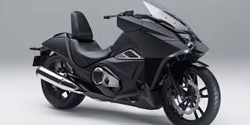

Portfolio

Brand Motor Terbaru
Pergeseran minat masyarakat Indonesia dari motor bebek ke motor matic membuat semua perusahaan otomotif berlomba-lomba menghadirkan motor matic terbaik yang memiliki teknologi tercanggih di kelasnya.Honda, Suzuki, dan Yamaha merupakan tiga perusahaan otomotif yang menguasi pasar sepeda motor di Indonesia.Ketiganya menawarkan beragam tipe motor matic berkualitas yang dilengkapi teknologi canggih dan menawarkan konsumsi bahan bakar sangat irit.
Mobil Populer 2020 di Indonesia
Mobil terpopuler di Indonesia bulan Januari 2020. Lihat daftar mobil paling top dari berbagai segmen yang paling dicari. 5 mobil populer antara lain Nissan Terra, Toyota Fortuner, Honda HRV 2020, Honda Brio, and Toyota Avanza Veloz. Lihat juga informasi detil, road test, dan review pengguna untuk mobil baru di Indonesia.